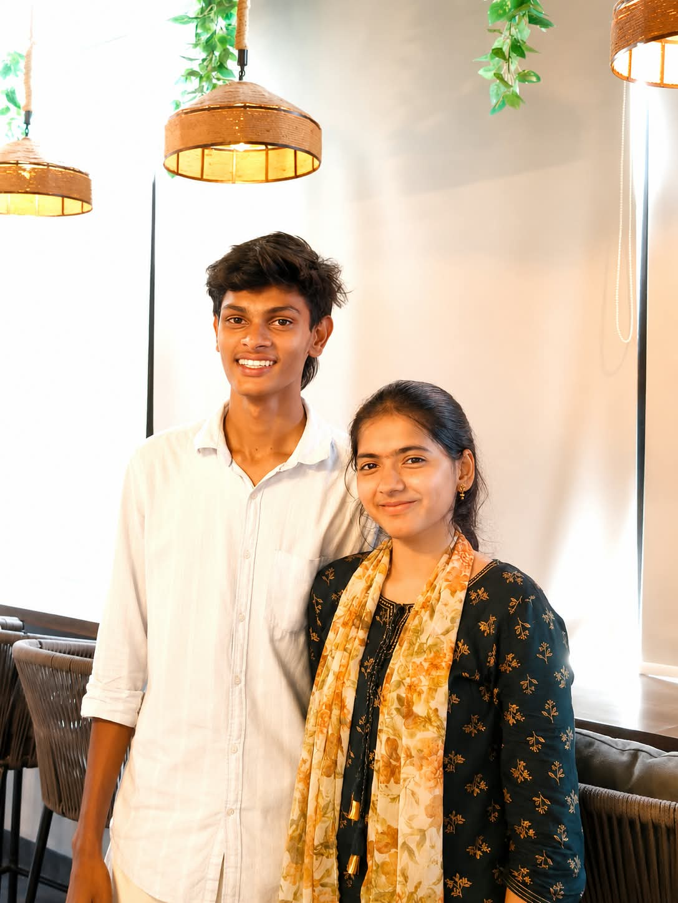
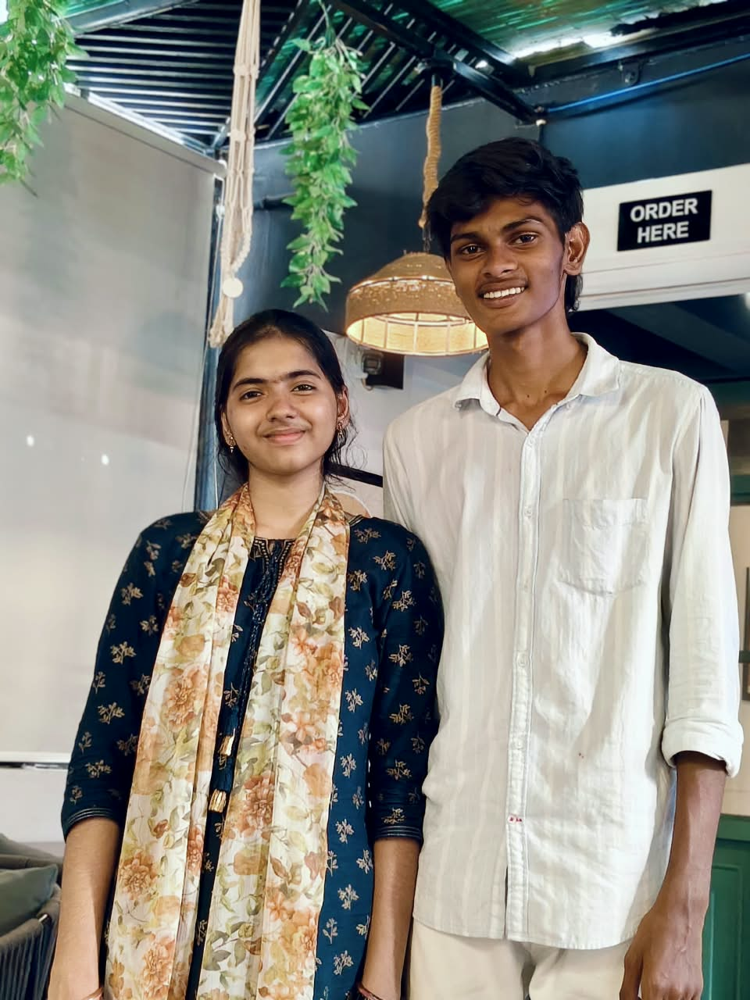
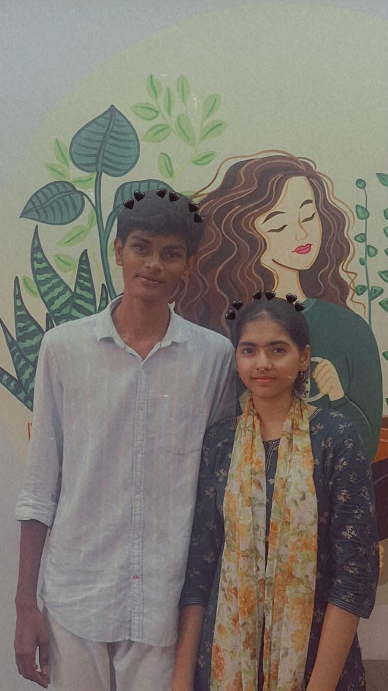

❤️ Our Love Story ❤️
❤️ How It All Started
Our story is something I never planned, but somehow it became one of
the most beautiful parts of my life. it all started friendship.
At first, we were just two people who slowly started talking, sharing things, laughing at stupid stuff, and spending more time with each other.
I never knew that this simple friendship would eventually become
something so important to me.
🌸 The First Time We Met
I still remember the first time I saw and met you. It was in bhavya's birthday in pushkar vanam, on august 5th>
At that time, I had no idea that this person would someday become
such an important part of my life. In first meeting you are pink and white dress
i fall in love more when i see in you that time but i thought that you never love me back
💬 Our First Chat
Our first real conversation started in inter 1sr year.
I remember that first she call me brother and she said happy rakshbandan to me . It was just a normal conversation at the time,
but looking back now, I realize that it was the beginning of something I would never want to lose.
🥹 When Friendship Started Becoming Love
As time passed, we became closer. We started sharing things that we
couldn't easily share with everyone else. Somewhere between those late conversations, random jokes, caring about each other, and being
there for one another, my feelings started changing. I didn't know exactly when it happened, but slowly, you became more than just my friend.
You became someone I couldn't imagine my life without.
💔 Our First Fight
Of course, our story wasn't always perfect. I still remember our
first fight it about i am not giving time to her actually it is not a fight . I didn't understand her properly. But somehow, even after all
the fights and misunderstandings that came later, we always found our way back to each other. We learned that being together doesn't mean
never fighting. It means choosing each other even after the fight is over.
🤍 Us Against Our Ego
We had so many fights. Sometimes it was anger, sometimes misunderstanding,
and sometimes just our stupid egos. But one thing I love about us is that we never allowed our ego to be bigger than what we felt
for each other. No matter how angry we became, somewhere inside, we still cared. We learned to say sorry, to understand each other, and to come back
instead of letting one fight become the end of br>us.
🔐 The Feelings We Couldn't Say
The funniest part of our story is that neither of us could actually
propose to the other. We both had feelings, but somehow we couldn't say them directly. So we found our own little way of expressing what was
inside our hearts through a self account.
Then one day, you gave me your password. When I read everything you had
written about your feelings for me, I honestly didn't know how to react. Seeing your feelings written there made me realize
that the person I had feelings for was feeling the same way about me. I could finally see what you had been hiding in your heart, and that moment is something I will never forget.
❤️ May 1st — The Day We Became Us
And then came May 1st.
After keeping our feelings hidden for so long, we finally stopped being scared
and told each other what was really in our hearts. we saw all our
fellings in our accounts at so many conversations she said proposed but
she want be with friendly bond but that day i was very very very happy
That day wasn't just
another day for me. It became one of the most important dates in our story. The two people who started as friends finally admitted
that their friendship had become love. ❤️
♾️ From Friendship To Love
When I look back at everything we've been through, I don't think our story is
special because it was perfect. It's special because it wasn't. We fought, we got angry, we misunderstood each other, and sometimes we
hurt each other. But after every fight, we still chose each other.
We started with friendship. We grew closer through countless
conversations and memories. We survived our fights without letting ego win. We kept our feelings hidden until we finally found the courage
to confess them. And on May 1st, our friendship officially became our love story.
I don't know what the future has planned for us, but I know I'm grateful
for every part of our journey—the good moments, the bad moments, the laughs, the fights, the tears, and everything in between. Because every
single one of those moments brought us here.
From friendship to love, from fights to forgiveness, from two people hiding their
feelings to two people finally choosing each other. That's our story. And honestly, I wouldn't want it any other way. ❤️
The unforgotable moments in our journey❤️
the day in pushkarvanam i never forgot that i am seeing you secretly that
no one knows i loved you that i am happy to see you and next the day i spent time with you in mahakaleshwar temple and time spent at gowthami ghat
samll small moments also make me so happy that day i am in bhavani mala it was unforgotableday to me and after that we celebrate your burthday i was
very dissapooint that day beacause you said you will not come to the cafe but geethika and bhavya helped me so much atlast i see you i am soo much you didnt know
how much happy i am that day i take photo with you it was my first photo thankyou sooo muchhhhh...❤️ after that we met again in cafe this time we are relation that i still
remember we take photos and that day you hold my hand i'm really sooooo happpy an we promised that to never give up each other.people who helped me to take close
to you i'm relly thankfull to them mainly our animal group friend i am very much thankfull to them
To My Beautiful Girl 🌸

Welcome to our little world.❤️
This website is a collection of our memories,
our story, and everything I want to tell you.
Explore Our Story 📖
it all started with friend ship. We had many conversation
many fights and many misunderstanding,but we never letour ego become bigger than our relationship.❤️
our memories🥰

our photos 📸
A Little Message For You 🥰
This our first photo when we were friends it was unforgotable❤️
.jpeg)
we met in a uptop cafe when we are in relation


Letter❤️
song🥰
Your Surprise 🎁
A Little Message For You 🥰
No matter how many pages this website has,
my favorite part of the story will always be
the moments I spend with you. ❤️